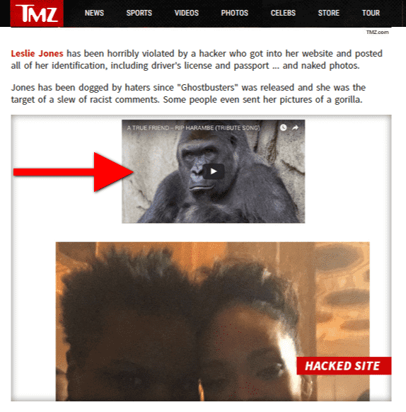

"You know, walk the earth, meet people... get into adventures."


In another display of “hacktivism,” heretofore and currently anonymous hackers penetrated actress Leslie Jones’ cloud storage of what is presumably her personal phone and downloaded photos including some of an explicit nature. The hackers then took over the Ghostbusters-remake and SNL actress’s promotional website, JustLeslie.com, and replaced the content with the photos and, as an additional touch, a tribute video to Harambe, the slain Cincinnati Zoo gorilla that was shot in May during an incident with a child falling into his pen.
Originally covered by TMZ and then by many other news outlets, the SJW outrage and narrative about how this poor woman is being punished for her race, her gender, and her bravery in taking down the patriarchy by rebranding a pillar of dude culture into a feminist flop.

My colleague, Mr. Brown, brought the news to ROK’s attention, and a discussion with Roosh prompted me to try to find these pictures and write a reaction article, and so off I went, wading through pages of Google searches of sympathetic rebroadcasts of the original article in hopes that someone, somewhere, had mirrored the images. I had thought that all was lost, until I found ageofshitlords.com.
I wholeheartedly approve of that domain name. This link may or may not work ; this appears to be the only site that actually had the pictures up and it went offline either through attack or sheer overload shortly after I viewed the page, although it seems to be back up as of this writing.
The content that I saw on the mirrored site had some celebrity photos and six NSFW explicit pictures. I don’t follow show-biz in general, nor black or other minority entertainment in particular, so I had no particular reaction to the celebrity shots of Jones and other people, with the exception of I noticed that even the men in the pictures with her are more attractive than she is, and this is coming from a straight man.
The two nude full frontals were uninspiring. Especially if you are a comedienne and a silver screen actress, when you are obese, you should not be sending nudes to anyone, even privately. Although she had the sense to blur her face in one of them, what is with people taking nude selfies with a commode in the picture? I get that you may want to use the bathroom mirror for the, um, spread, but try not to have the shitter in the shot with you, and the other picture is no better in what seems to be a janitor’s closet, or maybe the bathroom in the Ghostbusters’ fire station of the version in the 80s cartoon.
It gets worse. There’s a thoroughly unappetizing topless shot with a facial expression of presumably horniness, and then, my friends, we move on to the X rated, where I saw a picture of Leslie showing intense sexual hunger.
Since we try for a somewhat professional atmosphere here, I will summarize with the statements that one shot belongs in a gynecological textbook, and the other two belong in a porn movie involving anal sex.
My reaction went from null on the celeb shots, to turned off on the full frontals, scared by the topless sex pose, and just about lost my dinner on the last three. Roosh came very close to owing me a gourmet meal of Taco Bell (it was a cheat day, what can I say?)
Firstly, the cloud is vulnerable, in a big way. Any media is at risk, even an air-gapped USB stick in a bank’s safety deposit box vault, just because it exists, but, when you are no longer in physical control of the media, your risk factor just went to the level of the clouds, along with your data. It’s hard to hack something not connected to the internet at all (air-gapped), and it’s still pretty hard to hack a device connected to the internet yet not set up to share files.
However, when incriminating media of you is online and protected only by a login and password, it’s the equivalent of parking an expensive car in the hood and relying on the door locks.
Secondly, when you’re famous, this goes double. As people should have learned from the Fappening, where the cloud got penetrated and hundreds of celebrities had their racy photos and videos leaked, uploading saucy stuff to the cloud when you are a recognizable, at-least-somewhat attractive person is even dumber than when you’re a nobody, and it’s even worse when you’re NOT attractive.
I’ll take this Ghostbusters girl, thank you.
Lastly, it is trebly bad when you are not only famous, but infamous. The hackers of today are today’s and yesterday’s nerds. There is not a single nerd in the USA today who has not seen the original Ghostbusters, imagined cracking wise with Bill Murray, frying ghosts with Dan Aykroyd, and rescuing and banging the shit out of Sigourney Weaver in the back of that 59 Caddy Ambulance. That is their childhood that these SJW actresses are fucking with; did they not think that these guys might hit back?
I’d rather write gun articles than hit pieces, but, my fellow kings, this is a culture war we are in here, and sometimes a little instructional shame is a good thing. Quit ruining good movies by remaking them with a SJW agenda; have the damn creativity to come up with your own screenplay, or accept the consequences. If you must remake a movie, pick something horrible like Masters of the Universe and give us some She-Ra action already.
Read More: Buzzfeed Writer Gets Naked At Nude Beach, Becomes Angry When Men Look At Her